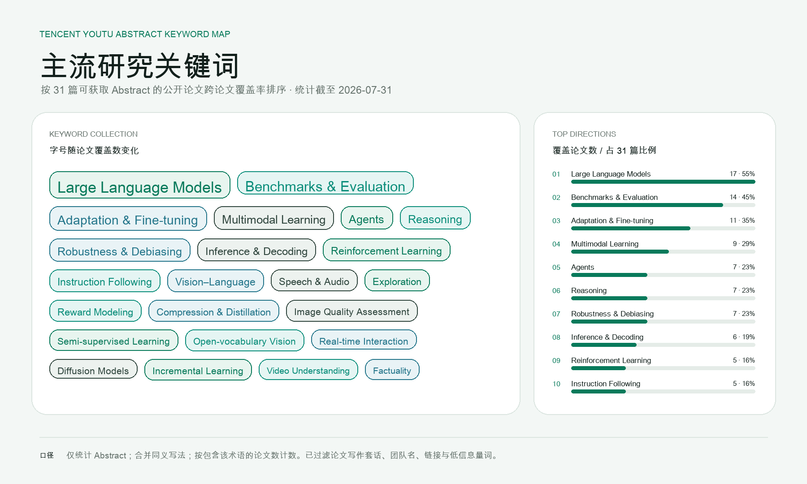

Multimodal
视觉、语音、视频与语言的统一理解和交互
TENCENT YOUTU LAB · LIVING RESEARCH ARCHIVE
优图旧官网已不再承担完整的研究更新职能，但维护中的 TencentYoutuResearch、 负责人个人主页和带有 Tencent Youtu Lab 署名的论文，仍然构成清晰、连续的公开研究网络。 本页以这些活跃来源重建团队的当前画像。
PUBLIC RESEARCH / 公开研究
40 2024–2026 公开论文工作集58 个研究仓库
11 个近期活跃仓库
31 篇 arXiv 摘要
01
CURRENT TEAM PROFILE
优图早期以人脸、检测、识别、视频理解和工业视觉著称；当前公开研究已经明显扩展到 多模态大模型、语言智能体、强化学习、RAG、生成式视觉与高效推理。
Ke Li 与 Xing Sun 的主页均明确标注 Principal Researcher / Team Manager @ Tencent Youtu Lab； Yulei Qin 的主页则标注 Senior Researcher。三人的近年论文与开源项目形成可交叉验证的团队级研究索引。
视觉、语音、视频与语言的统一理解和交互
工具使用、长程任务、智能体强化学习与评测
GraphRAG、文档解析、检索表示与复杂推理
训练、推理加速、指令遵循与高效部署
图像与视频生成、编辑和像素空间建模
检测、质量评估、深伪取证与视觉学习
02
ACTIVITY SIGNALS
仓库推送时间回答“代码是否继续维护”，负责人论文索引回答“团队是否继续发表”， 论文署名与官方 Youtu 仓库回答“成果是否属于这张研究网络”。
这些信号分别展示，不把 GitHub 更新时间误当作论文发布日期，也不把个人合作成果自动扩张成完整内部名录。
正在载入研究方向统计…
RECENT REPOSITORY PUSHES
正在载入仓库活动…
03
ABSTRACT KEYWORDS
参考 Seed 页面的统计方法，我们对 40 篇公开论文工作集中可获取 Abstract 的 31 篇做研究词汇归一化， 按“包含该术语的不同论文数”排序，以跨论文覆盖率观察优图当前公开研究重心。
图中已剔除 paper、method、results、novel、state-of-the-art 等论文写作套话； LLM、agent、vision-language 等同义写法则合并到同一个可解释方向。

字号对应跨论文覆盖数；右侧列出覆盖率最高的 10 个方向。关键词可以重叠出现于同一篇论文，因此占比不相加。
正在载入关键词摘要…
04
PUBLIC PEOPLE
优图未公开完整员工名册。以下人员均由个人主页明确标注当前 Tencent Youtu Lab 任职； 页面只记录其公开角色与研究方向，不推断组织层级。
05
PUBLIC PROJECTS
Xing Sun 的当前主页将优图项目归纳为 MLLM、Agent 与 RAG 三条线，覆盖 Video-MME、VITA、 Youtu-Agent、Youtu-GraphRAG、文档解析和检索模型。
项目入口保持原始组织归属；跨 GitHub 组织发布并不改变页面的证据来源标注。
正在载入公开项目…
06
RECENT PUBLICATIONS
收录现任负责人公开论文索引中的 2024–2026 条目，并补入维护中的 Youtu 研究仓库所对应论文。 每条记录都保留归属证据类型，避免把个人合作、官方团队发布和普通外部合作混为一谈。
07
SOURCE & ATTRIBUTION
仅作为团队历史身份入口；不再用其更新时间单独判断优图是否活跃。
TencentYoutuResearch 与明确署名 Tencent Youtu Lab 的仓库，作为当前项目和代码活动的一手证据。
现任负责人主页明确列出的近期论文纳入团队级公开工作集，并单独标记为“负责人论文索引”。
页面不是内部人员或完整论文数据库；缺少公开归属证据的合作成果不自动纳入。